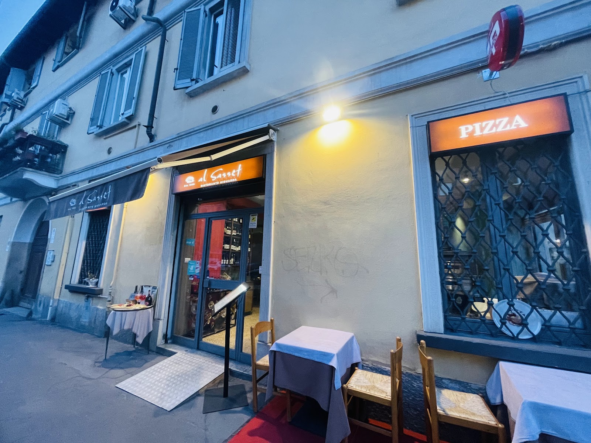

Via Graziano 35 · Niguarda, Milano
Stasera mare o terra?
Il nostro menu è diviso così da sempre: antipasti di mare e di terra, primi di mare e di terra, secondi di mare e di terra. Scegliete da che parte stare — o prendete una pizza e non scegliete affatto.
4,8 su 330 recensioni Google
E poi ci sono le pizze
Dodici classiche e undici speciali: la terza via, per chi non ha voglia di scegliere. La pizza che porta il nostro nome, però, sta dalla parte del mare.
Classiche
- Marinara5 €
- Margherita6,50 €
- Napoli7 €
- Calzone classico9 €
- Diavola9,50 €
- Quattro stagioni9,50 €
- Quattro formaggi9,50 €
- Ortolana9,50 €
- Salsiccia e friarielli9,50 €
- Americana9,50 €
- Regina9,50 €
- Bangla9,50 €
Speciali
- Trentina12 €
- Golosa12 €
- Bufalina12,50 €
- Valtellina12,50 €
- Salmoncina12,50 €
- Purgatorio12,50 €
- Caprese13 €
- Burrosa13 €
- Inferno13 €
- al Sasset, ai frutti di mare14 €
- Fior di latte al tartufo15 €
Cosa scrivono
4,8 su 330 recensioni Google. Molte arrivano da chi passa da Milano e ci trova per caso.
«The risotto alla milanese was cooked to perfection.»
Recensione Google
«Me and my husband come to this restaurant for our last dinner in Milan.»
Recensione Google
Dove siamo
Via Graziano 35
20162 Milano · Niguarda
Per prenotare un tavolo o sapere se siamo aperti, il modo più rapido è chiamare.
Locale LGBTQ+ friendly.